This website template is borrowed from Nerfies. Thank you!
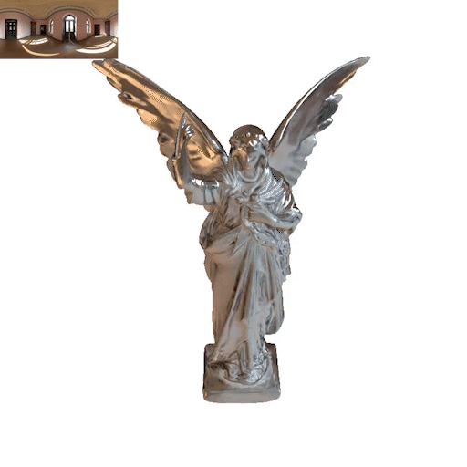
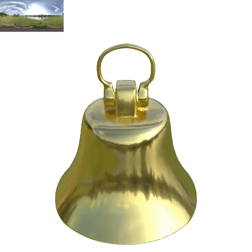
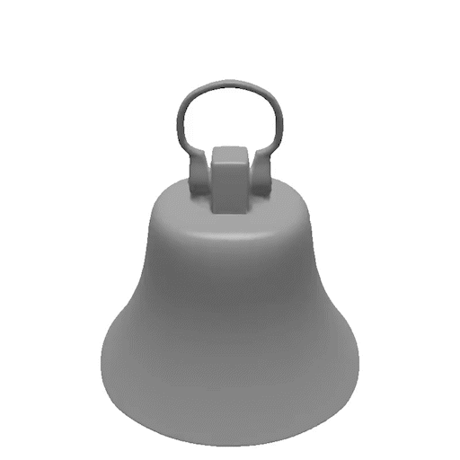
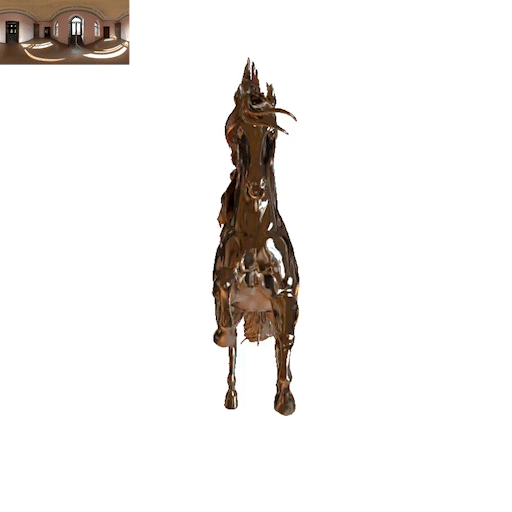
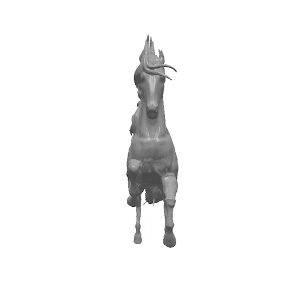
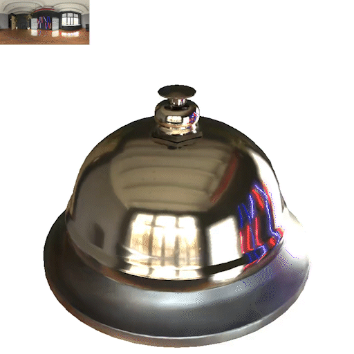
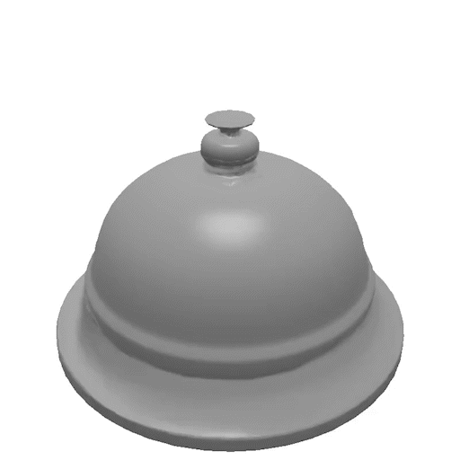
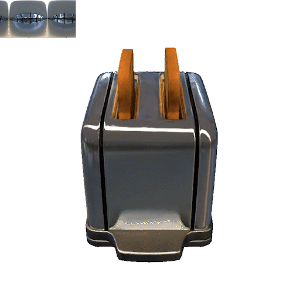
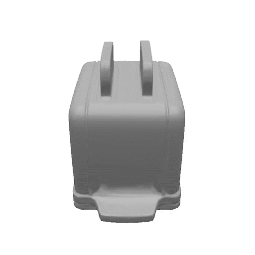
3D Gaussian Splatting (3DGS) has shown a powerful capability for novel view synthesis due to its detailed expressive ability and highly efficient rendering speed. Unfortunately, creating relightable 3D assets and reconstructing faithful geometry with 3DGS is still problematic, particularly for reflective objects, as its discontinuous representation raises difficulties in constraining geometries. Volumetric signed distance field (SDF) methods provide robust geometry reconstruction, while the expensive ray marching hinders its real-time application and slows the training. Besides, these methods struggle to capture sharp geometric details. To this end, we propose to guide 3DGS and SDF bidirectionally in a complementary manner, including an SDF-aided Gaussian splatting for efficient optimization of the relighting model and a GS-guided SDF enhancement for high-quality geometry reconstruction. At the core of our SDF-aided Gaussian splatting is the mutual supervision of the depth and normal between blended Gaussians and SDF, which avoids the expensive volume rendering of SDF. Thanks to this mutual supervision, the learned blended Gaussians are well-constrained with a minimal time cost. As the Gaussians are rendered in a deferred shading mode, the alpha-blended Gaussians are smooth, while individual Gaussians may still be outliers, yielding floater artifacts. Therefore, we introduce an SDF-aware pruning strategy to remove Gaussian outliers located distant from the surface defined by SDF, avoiding floater issue. This way, our GS framework provides reasonable normal and achieves realistic relighting, while the mesh from depth is still problematic. Therefore, we design a GS-guided SDF refinement, which utilizes the blended normal from Gaussians to finetune SDF. With this enhancement, our method can further provide high-quality meshes for reflective objects at the cost of 17% extra training time.
Our proposed method includes two geometry representations (i.e., Gaussian primitive and TensoSDF). In the deferred Gaussian pipeline, the shading parameters, normal and depth are projected to the image plane and alpha blended. The depth and normal from TensoSDF and the blended Gaussians are supervised mutually. Note no color network is used in the SDF part, and only the geometry attributes are volume rendered.
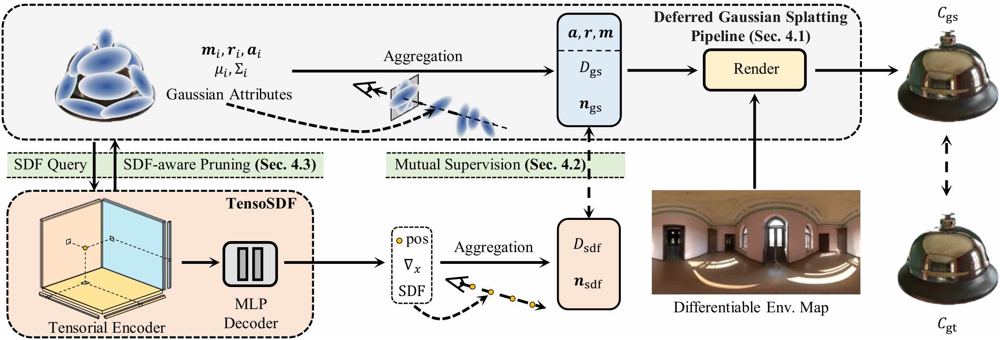
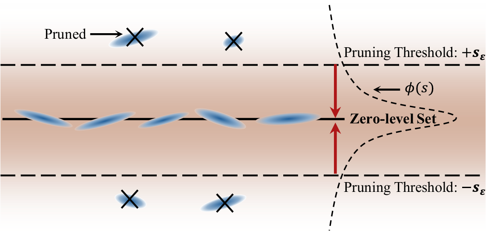
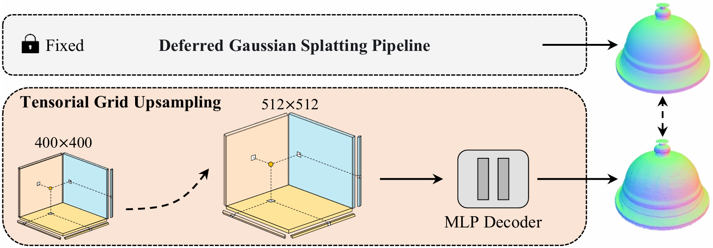
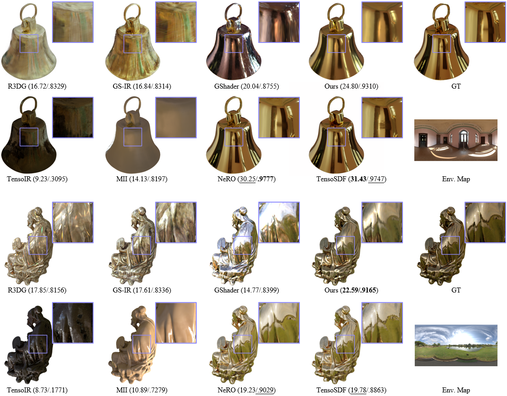
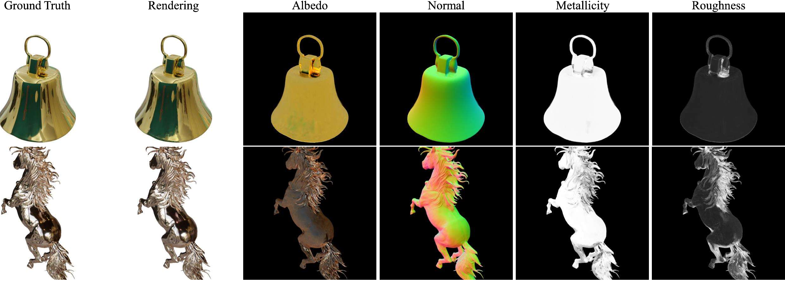
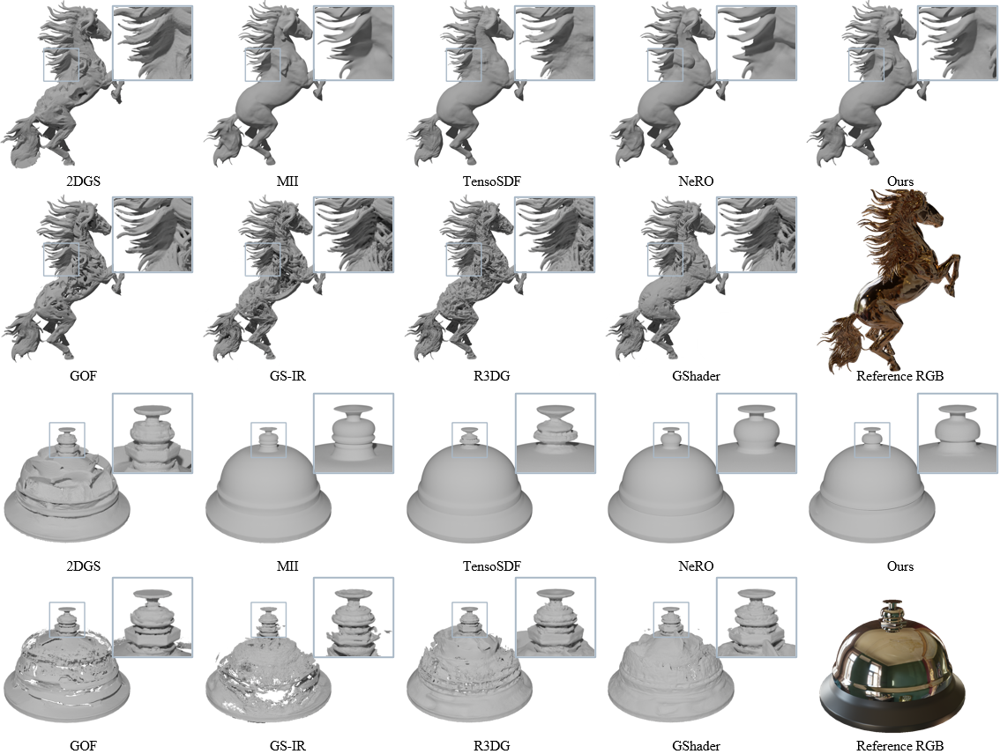
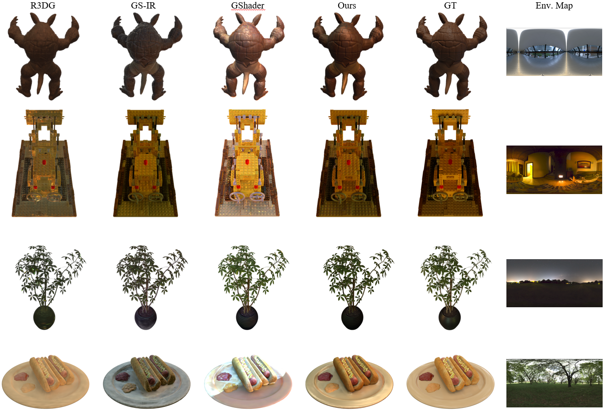
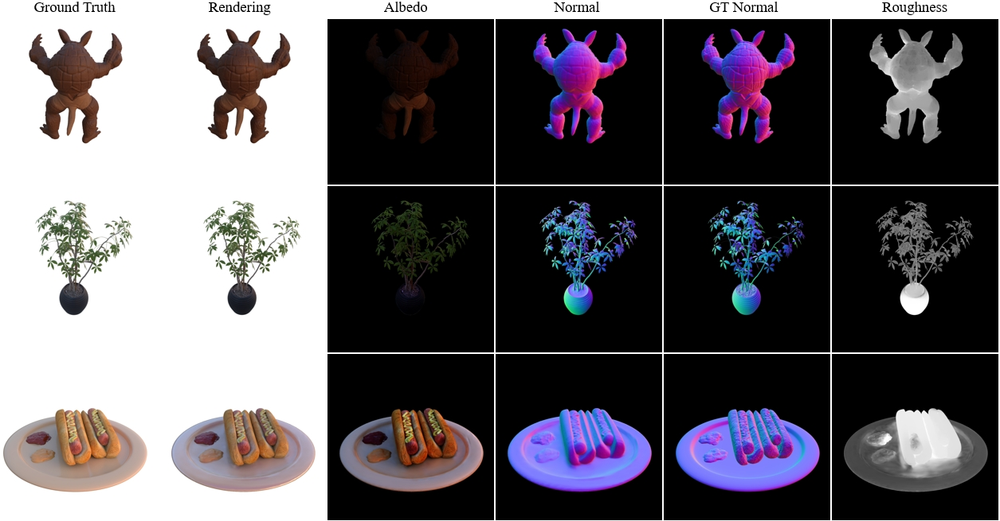
@InProceedings{zhu2025discretizedsdf,
title = {GS-ROR^2: Bidirectional-guided 3DGS and SDF for Reflective Object Relighting and Reconstruction},
author = {Zhu, Zuo-Liang and Wang, Beibei and Yang, Jian},
booktitle = {ACM Transactions on Graphics (TOG)},
year = {2025}
}This website template is borrowed from Nerfies. Thank you!